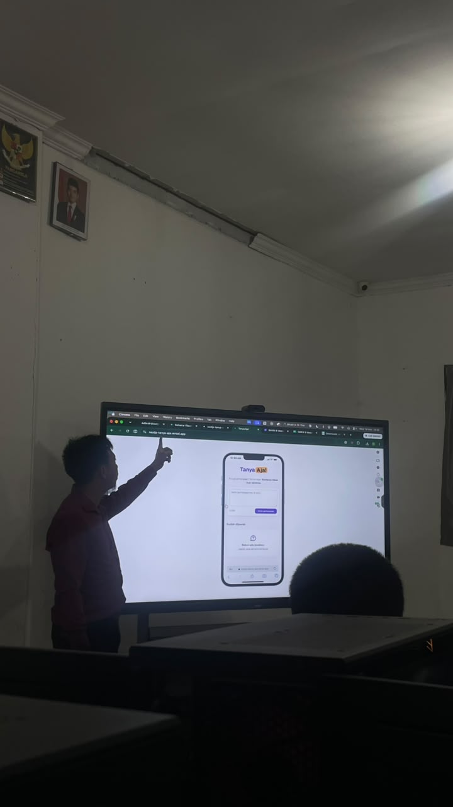
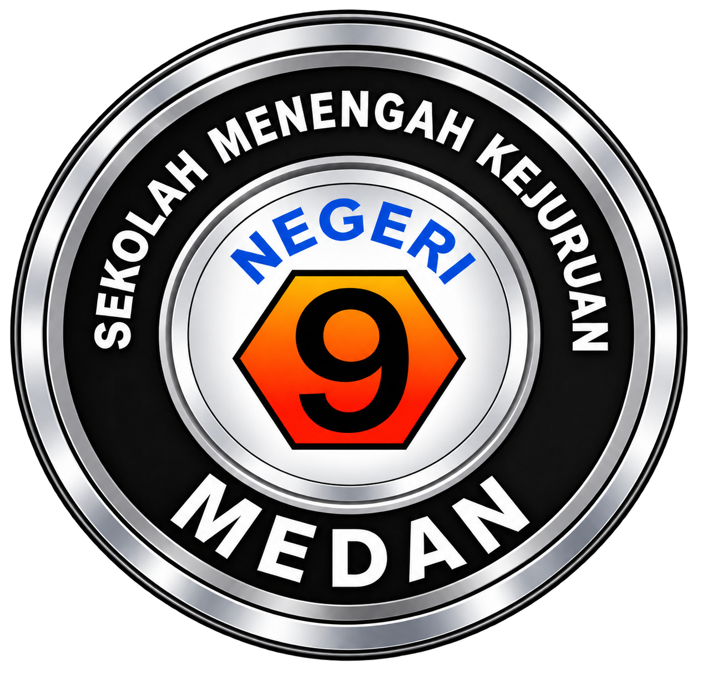
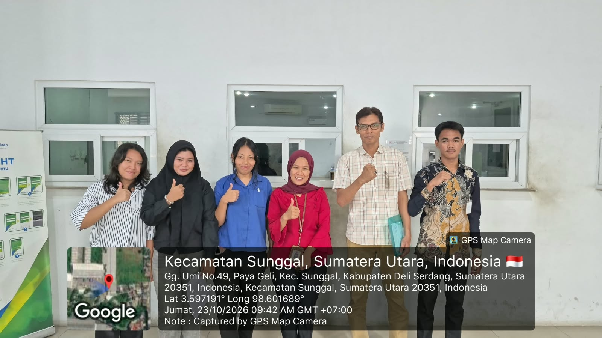

Belajar Bersama Guru Tamu Industri
Siswa XII RPL 2 belajar dengan guru tamu dari Perusahan Kita Kale


Siswa XII RPL 2 belajar dengan guru tamu dari Perusahan Kita Kale

Platform ujian berbasis komputer yang adaptif pada desktop lab maupun smartphone.

Etalase digital karya kreatif siswa jurusan Rekayasa Perangkat Lunak.

Pengembangan website sekolah sebagai media informasi dan komunikasi digital.

Kegiatan belajar HTML, CSS, dan JavaScript untuk meningkatkan kemampuan pemrograman siswa.

Siswa RPL mengenal dunia industri dan mengembangkan keterampilan melalui pengalaman kerja secara langsung
Informasi Sekolah & Jurusan RPL
PERTANYAAN POPULER